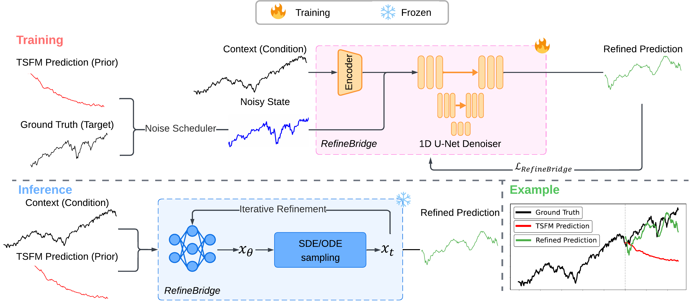
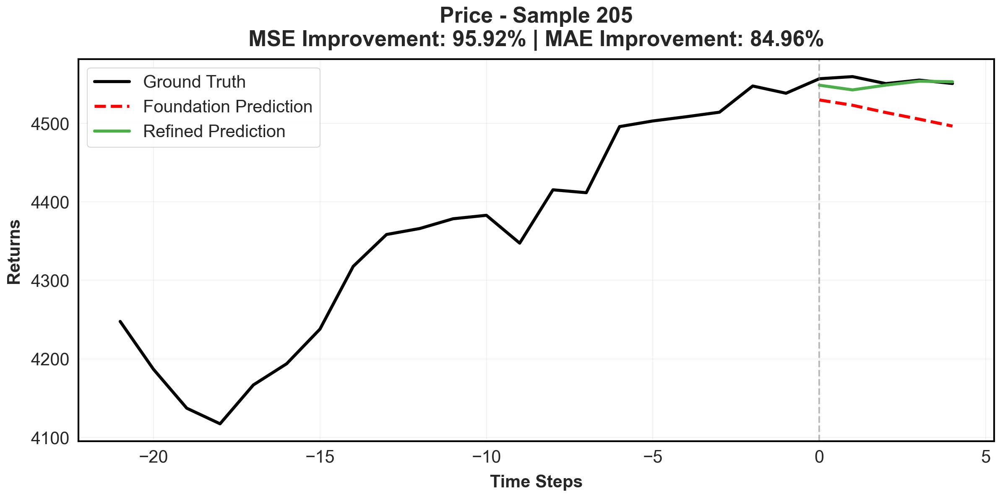
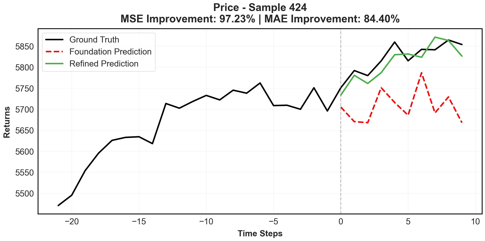
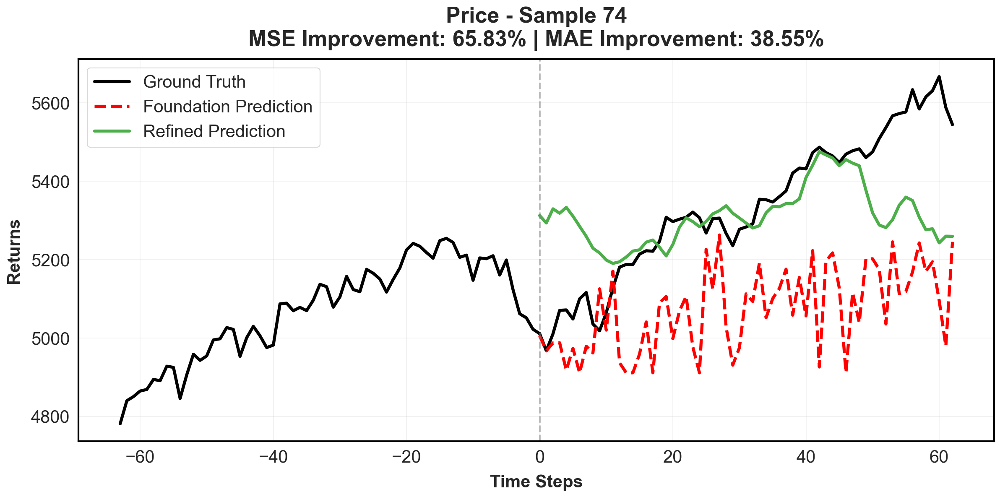
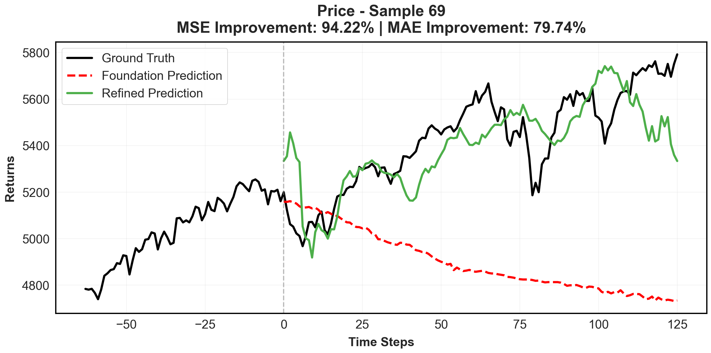

Forecast with a frozen TSFM
Chronos, Moirai, or Time-MoE produces the initial prediction from a historical context window.
1 Imperial College London2 Tsinghua University
* Equal contribution † Corresponding author
ICASSP 2026 / Oral Presentation
Financial time series forecasting is particularly challenging for transformer-based time series foundation models (TSFMs) due to non-stationarity, heavy-tailed distributions, and high-frequency noise present in data. Low-rank adaptation (LoRA) has become a popular parameter-efficient method for adapting pre-trained TSFMs to downstream data domains. However, it still underperforms in financial data, as it preserves the network architecture and training objective of TSFMs rather than complementing the foundation model.
To further enhance TSFMs, we propose a novel refinement module, RefineBridge, built upon a tractable Schrödinger Bridge (SB) generative framework. Given the forecasts of TSFM as generative prior and the observed ground truths as targets, RefineBridge learns context-conditioned stochastic transport maps to improve TSFM predictions, iteratively approaching the ground-truth target from even a low-quality prior. Simulations on multiple financial benchmarks demonstrate that RefineBridge consistently improves the performance of state-of-the-art TSFMs across different prediction horizons.
A forecast is an informative starting point. We learn a generative bridge from that prior
to the target distribution, conditioned on the observed historical context.

Chronos, Moirai, or Time-MoE produces the initial prediction from a historical context window.
A DLinear context encoder and a 1D U-Net learn a complementary denoising objective with only 2.3M parameters.
Deterministic ODE or stochastic SDE sampling transports the original forecast toward the learned target distribution.
Selected S&P 500 forecasts from the oral presentation.
Explore short and long horizons; select any figure to take a closer look.




Three foundation models. Three financial assets. Five forecasting horizons.
Best MSE / MAE results
Trainable bridge parameters
Lower MSE on S&P 500Chronos-large · 126-day horizon
Compare the original foundation model, LoRA, and RefineBridge. Values are from Table 1 of the paper, averaged over five independent runs. Lower is better.
Prediction horizon in trading days · bars share a common scale
| Horizon | Original | LoRA | RefineBridge | Reduction vs. original |
|---|
| Asset | H | Chronoslarge | Moirailarge | Time-MoEbase | |||||||||||||||
|---|---|---|---|---|---|---|---|---|---|---|---|---|---|---|---|---|---|---|---|
| Original | LoRA | RefineBridge | Original | LoRA | RefineBridge | Original | LoRA | RefineBridge | |||||||||||
| MSE | MAE | MSE | MAE | MSE | MAE | MSE | MAE | MSE | MAE | MSE | MAE | MSE | MAE | MSE | MAE | MSE | MAE | ||
| S&P 500 | 5 | 0.009 | 0.075 | 0.011 | 0.078 | 0.008 | 0.067 | 0.016 | 0.095 | 0.023 | 0.110 | 0.008 | 0.069 | 0.012 | 0.088 | 0.011 | 0.079 | 0.009 | 0.073 |
| 10 | 0.016 | 0.101 | 0.017 | 0.099 | 0.014 | 0.092 | 0.021 | 0.111 | 0.026 | 0.122 | 0.017 | 0.098 | 0.022 | 0.121 | 0.017 | 0.103 | 0.018 | 0.105 | |
| 21 | 0.157 | 0.324 | 1.894 | 1.339 | 0.105 | 0.260 | 0.115 | 0.267 | 0.898 | 0.329 | 0.103 | 0.251 | 0.357 | 0.491 | 1.330 | 1.098 | 0.279 | 0.426 | |
| 63 | 1.164 | 0.894 | 3.308 | 1.025 | 0.567 | 0.601 | 0.388 | 0.487 | 3.972 | 1.906 | 0.297 | 0.427 | 2.542 | 1.391 | 2.293 | 1.389 | 1.328 | 1.007 | |
| 126 | 5.536 | 2.026 | 6.493 | 2.457 | 2.102 | 1.207 | 1.566 | 0.996 | 5.550 | 2.188 | 0.764 | 0.691 | 9.257 | 2.761 | 2.511 | 1.326 | 3.338 | 1.603 | |
| WTI | 5 | 0.175 | 0.319 | 0.252 | 0.373 | 0.146 | 0.293 | 0.351 | 0.447 | 0.291 | 0.412 | 0.178 | 0.321 | 0.198 | 0.343 | 0.202 | 0.341 | 0.146 | 0.295 |
| 10 | 0.278 | 0.410 | 0.445 | 0.497 | 0.232 | 0.373 | 0.554 | 0.574 | 0.458 | 0.522 | 0.280 | 0.408 | 0.313 | 0.438 | 0.319 | 0.441 | 0.237 | 0.378 | |
| 21 | 0.407 | 0.503 | 0.586 | 0.627 | 0.335 | 0.469 | 0.409 | 0.502 | 1.338 | 0.965 | 0.325 | 0.458 | 0.370 | 0.478 | 0.395 | 0.501 | 0.316 | 0.457 | |
| 63 | 0.907 | 0.771 | 0.819 | 0.715 | 0.774 | 0.721 | 1.338 | 0.943 | 3.319 | 1.505 | 0.891 | 0.769 | 2.092 | 1.223 | 1.897 | 1.134 | 0.928 | 0.798 | |
| 126 | 1.100 | 0.844 | 1.176 | 0.876 | 0.844 | 0.742 | 1.813 | 1.047 | 2.174 | 1.190 | 1.072 | 0.863 | 4.010 | 1.523 | 3.630 | 1.569 | 1.160 | 0.904 | |
| EUR/USD | 5 | 0.295 | 0.418 | 0.315 | 0.432 | 0.333 | 0.443 | 0.627 | 0.629 | 0.596 | 0.619 | 0.327 | 0.447 | 0.419 | 0.500 | 0.372 | 0.476 | 0.339 | 0.453 |
| 10 | 0.555 | 0.584 | 0.631 | 0.593 | 0.509 | 0.557 | 1.093 | 0.845 | 0.917 | 0.779 | 0.567 | 0.599 | 0.786 | 0.696 | 0.756 | 0.685 | 0.566 | 0.597 | |
| 21 | 1.017 | 0.802 | 1.347 | 0.896 | 0.888 | 0.756 | 1.052 | 0.801 | 1.733 | 1.030 | 0.897 | 0.748 | 1.224 | 0.891 | 1.018 | 0.773 | 1.043 | 0.806 | |
| 63 | 3.381 | 1.404 | 8.423 | 2.119 | 1.596 | 0.966 | 3.263 | 1.298 | 4.872 | 1.714 | 1.730 | 1.008 | 4.626 | 1.614 | 4.683 | 1.801 | 1.951 | 1.047 | |
| 126 | 3.328 | 1.384 | 4.833 | 1.736 | 1.702 | 1.004 | 2.621 | 1.267 | 6.181 | 2.066 | 1.272 | 0.852 | 2.956 | 1.284 | 6.405 | 2.067 | 1.458 | 0.953 | |
| 1st count | 2 | 1 | 27 | 0 | 0 | 30 | 0 | 6 | 24 | ||||||||||
Data20 years of daily financial data
January 2005 – January 2025
EvaluationTemporal 80% / 10% / 10% split
Train / validation / test
Forecast horizons5, 10, 21, 63, and 126 trading days
21- or 252-day context windows
Results vary by configuration. For example, original Chronos performs better on EUR/USD at H = 5, while LoRA performs better for Time-MoE on S&P 500 at H = 126.
@article{bolton2025refinebridge,
title={RefineBridge: Generative Bridge Models Improve
Financial Forecasting by Foundation Models},
author={Bolton, Anthony and Zhou, Wuyang and Chen, Zehua
and Iacovides, Giorgos and Mandic, Danilo},
journal={arXiv preprint arXiv:2512.21572},
year={2025}
}